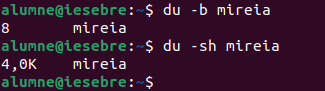

Sistemes de Fitxers
Mida sector
El sector és la unitat mínima física on es guarden les dades en un disc dur. Per defecte, la mida d'un sector és de 512 bytes. Això significa que cada vegada que s'emmagatzema informació en un disc, com a mínim s'utilitza aquest espai, encara que la dada sigui més petita.
Mida block
El sistema operatiu no treballa directament amb sectors físics, sinó amb blocs lògics. Un bloc és una agrupació de sectors, i la mida estàndard d'un bloc és de 4096 bytes.
Això implica que:
-
Un bloc pot contenir 8 sectors de 512 bytes cadascun.
-
Tot i que un fitxer ocupi menys espai, com per exemple 100 bytes, se li assignarà un bloc complet de 4096 bytes. Això genera un petit espai "desaprofitat" dins del bloc.
Exemple: Mida del fitxer vs mida del bloc
Per entendre la diferència entre la mida real d'un fitxer i la mida del bloc que ocupa, crearem un fitxer anomenat mireia i escriurem alguna dada dins. A continuació, comprovarem la seva mida real i la mida del bloc assignat.
Observació:
-
La mida del fitxer mireia és de 8 bytes.
-
No obstant això, el sistema operatiu li assigna un bloc de 4,0 KB, ja que és la mida estàndard per a blocs en el sistema operatiu.
Això exemplifica com, fins i tot si un fitxer és molt petit, ocupa almenys un bloc complet.

Fragmentació
La fragmentació és un fenomen que es produeix quan les dades emmagatzemades en un disc no estan organitzades de manera eficient. Hi ha dos tipus principals de fragmentació: interna i externa.
Fragmentació interna
La fragmentació interna es produeix dins dels blocs del sistema operatiu. Quan un fitxer no ocupa tot l’espai disponible en un bloc, es genera un espai desaprofitat. Aquest espai no pot ser utilitzat per cap altre fitxer, i, com més petits siguin els fitxers, més espai desaprofitat hi haurà.
Exemple pràctic:
- Si un fitxer ocupa 100 bytes i el bloc assignat té una mida de 4096 bytes, els 3996 bytes restants del bloc es perden, ja que no es poden utilitzar per a altres dades.
Solucions:
- Ajustar la mida del bloc: Es poden utilitzar blocs més petits per optimitzar l'espai, però això pot impactar negativament la velocitat de lectura i escriptura.
- Utilitzar blocs més grans: És ideal per a fitxers grans, com ara vídeos o arxius ISO, ja que redueix la fragmentació interna, però no és recomanable per a fitxers petits.
Fragmentació externa
La fragmentació externa es produeix quan les dades d’un fitxer es guarden en blocs no consecutius del disc. Això passa sovint amb el temps, a mesura que es creen, editen i eliminen fitxers. El resultat és que el sistema operatiu necessita més temps per accedir a les dades, ja que ha de localitzar múltiples blocs en lloc d’un sol segment contigu.
Exemple pràctic:
- Imagina que tens un disc gairebé ple. Quan es crea un fitxer, les seves dades es poden repartir en diferents blocs disponibles però no consecutius. Això fa que la lectura del fitxer sigui més lenta.
Solucions:
- Desfragmentació: Reorganitzar els blocs de manera que els fitxers siguin contigus al disc. Aquesta acció millora la velocitat de lectura i escriptura.
Desfragmentació
La desfragmentació és el procés de reorganitzar els blocs d’un disc per agrupar els fitxers en segments contigus i reduir la fragmentació externa. Aquest procés pot millorar significativament el rendiment del sistema, especialment en discos HDD (no tan rellevant en discos SSD).
Consideracions:
- La desfragmentació és especialment útil en sistemes que utilitzen discos durs HDD, ja que millora l'accés seqüencial i l'eficiència del sistema.
- En discos SSD, la desfragmentació no és necessària, ja que l'accés a les dades no depèn de la ubicació física al disc. A més, aquest procés pot reduir la vida útil del disc SSD.
Eines útils:
En Windows:
- Windows inclou una eina integrada que es pot executar manualment o programar automàticament.
- Per accedir-hi, obre el menú d'inici, cerca "Desfragmentador de discs" i segueix aquests passos:
- Selecciona la unitat que vols desfragmentar.
- Fes clic a "Analitza" per veure el grau de fragmentació.
- Si cal, fes clic a "Optimitza" o "Desfragmenta" per iniciar el procés.
En Linux:
- En sistemes amb particions ext4, es poden utilitzar eines com
e4defragper desfragmentar fitxers o particions específiques. - Comanda per desfragmentar una partició específica:
"e4defrag /dev/sdX1"
Exemples pràctics:
- Windows: Si el teu disc dur HDD comença a anar més lent després d'instal·lar i esborrar molts fitxers, utilitza l'eina de desfragmentació per reorganitzar els blocs. Això pot millorar significativament la velocitat d'accés als fitxers.
- Linux: En un servidor que utilitza una partició ext4 molt fragmentada amb fitxers grans i petits, executar una eina com
e4defragpot millorar el rendiment de lectura i escriptura.
Recomanacions generals
- Discos HDD: Desfragmenta periòdicament, especialment si la unitat s’utilitza per a emmagatzematge intensiu o en sistemes antics.
- Discos SSD: Evita la desfragmentació, ja que no aporta millores i pot danyar el disc.
- Planificació: Configura desfragmentacions automàtiques en Windows per mantenir un rendiment òptim.
Tipus de Formateig
Formateig de Baix Nivell
-
S'executa directament sobre el disc físic a nivell de sectors.
-
Detecta i intenta reparar sectors defectuosos.
-
Esborra completament els fitxers, fent que la seva recuperació sigui gairebé impossible.
Exemple pràctic:
-
Els fabricants de discos realitzen aquest tipus de formateig abans de distribuir els discos al mercat. Aquest procés crea la infraestructura física necessària per a l'emmagatzematge de dades.
-
Els usuaris finals no solen realitzar aquest tipus de formateig, però eines especialitzades permeten utilitzar-lo en casos de necessitat per reparar sectors defectuosos.
Formateig de Nivell Mitjà
-
Configura el sistema de fitxers (com ara FAT32, NTFS o ext4).
-
No esborra físicament les dades, sinó que elimina la informació sobre la seva ubicació al sistema de fitxers.
-
Els fitxers es poden recuperar amb eines especialitzades fins que es sobreescriguin.
Exemple pràctic:
-
Canviar el sistema de fitxers d'un disc dur extern de FAT32 a NTFS per poder emmagatzemar fitxers més grans de 4 GB.
-
Útil quan necessites optimitzar el sistema de fitxers segons els tipus de dades que es gestionen.
Formateig d'Alt Nivell o Ràpid
-
Una variant del formateig de nivell mitjà, que elimina únicament les metadades del sistema de fitxers.
-
És més ràpid però menys segur si es vol evitar que les dades es puguin recuperar.
Exemple pràctic: - Utilitzar el formateig ràpid per reinicialitzar una unitat USB o un disc dur extern de manera immediata. Aquest tipus de formateig s'usa habitualment per alliberar espai ràpidament sense eliminar físicament les dades existents.
Configuració de blocs i pàgines
Quan es formata un disc, és important seleccionar correctament la mida del bloc (o unitat d'assignació). Aquesta configuració afecta directament l'eficiència de l'emmagatzematge i el rendiment del sistema. També hi ha el concepte de pàgina de memòria, que és gestionat pel sistema operatiu.
Comparativa: Pàgines de memòria i blocs de sistema de fitxers
| Configuració | Mida Gran (Blocs/Pàgines) | Mida Petita (Blocs/Pàgines) |
|---|---|---|
| Gestió de memòria (pàgines) | Quan és adequat: Computació d'alt rendiment, bases de dades grans, virtualització. | Quan és adequat: Sistemes de computació general, sistemes amb RAM limitada, sistemes encastats. |
| Avantatges: Taules de pàgines més petites, millor per a grans conjunts de dades, eficient per a aplicacions amb grans petjades de memòria. | Avantatges: Ús més eficient de la memòria per a processos petits, menys memòria desaprofitada, gestió més fina. | |
| Sistema de fitxers (blocs) | Quan és adequat: Servidors de mitjans, emmagatzematge de fitxers grans (vídeos, imatges), sistemes de còpia de seguretat. | Quan és adequat: Sistemes amb molts fitxers petits (codi font, documents), volums d'arrencada. |
| Avantatges: Eficient per a fitxers grans, redueix la sobrecàrrega en els metadades del sistema de fitxers, bo per a operacions seqüencials de lectura/escriptura. | Avantatges: Redueix l'espai desaprofitat (slack space), millor per a accés aleatori, eficient per a operacions amb fitxers petits. |
Casos pràctics
| Sistema de Fitxers | Cas d'Ús: Pel·lícules / Mitjans Grans | Cas d'Ús: Música / Fotos | Cas d'Ús: Documents / Fitxers Generals | Cas d'Ús: Disc d'Arrencada / Sistema |
|---|---|---|---|---|
| NTFS (Windows) | Bloc gran (p. ex., 64 KB). Eficient per a fitxers grans. | Bloc estàndard (p. ex., 4 KB). Equilibri general. | Bloc estàndard (p. ex., 4 KB). Rendiment fiable. | Bloc estàndard (p. ex., 4 KB). Compatibilitat i rendiment. |
| EXT4 (Linux) | Bloc gran (4-64 KB). Redueix la fragmentació en fitxers grans. | Bloc estàndard (p. ex., 4 KB). Bon rendiment. | Bloc estàndard (p. ex., 4 KB). Molt eficient. | Bloc estàndard (p. ex., 4 KB). Suport per journaling. |
| APFS (macOS) | Configuració per defecte. Optimitzat per SSDs. | Configuració per defecte. Compatible amb tot. | Configuració per defecte. Protecció contra fallades. | Configuració per defecte. Rendiment i fiabilitat. |
| XFS (Linux) | Configuració estàndard. Ideal per a grans volums de dades. | Configuració estàndard. Bon rendiment escalable. | Configuració estàndard. Alt rendiment. | No habitual per a discs d'arrencada, però eficient per sistemes grans. |
Font: Com utilitzar la mida de bloc correcta en formatar
Recomanacions generals
- Per a fitxers grans: Trieu blocs més grans (p. ex., 64 KB o més).
- Per a fitxers petits: Utilitzeu blocs petits (p. ex., 4 KB) per evitar espai desaprofitat.
- Sistema operatiu i arrencada: Mantingueu la mida estàndard (p. ex., 4 KB) per garantir compatibilitat i rendiment.
Particions
Les particions permeten dividir un disc físic en múltiples unitats lògiques, facilitant l'organització de dades, la instal·lació de diversos sistemes operatius i l'optimització del rendiment.
Què és una partició?
Una partició és una divisió lògica d'un disc dur o SSD que permet gestionar diferents tipus de dades o sistemes operatius de manera separada. Cada partició actua com una unitat independent, i pot tenir el seu propi sistema de fitxers.
Avantatges de les particions
- Organització de dades: Mantenir els fitxers personals separats dels fitxers del sistema operatiu facilita la gestió i evita pèrdues accidentals.
- Compatibilitat: Permet tenir diferents sistemes operatius, com Windows i Linux, en el mateix disc.
- Còpies de seguretat: Les particions dedicades a les còpies de seguretat protegeixen les dades en cas d'errors al sistema principal.
Com gestionar particions?
En Windows
Windows inclou eines gràfiques per gestionar particions, com la Gestió de discs. Aquesta eina permet crear, redimensionar i formatar particions sense necessitat de programari extern.
Passos principals:
-
Obre la Gestió de discs prement
Windows + Xi seleccionant "Gestió de discs". -
Selecciona el disc que vols particionar i fes clic amb el botó dret per reduir o crear particions.
-
Assigna un sistema de fitxers com NTFS o FAT32 i una lletra d'unitat.
-
Aplica els canvis i espera que es completin.
Un vídeo val més que mil paraules! 😊
Referència: Vídeo tutorial: Gestió de particions en Windows
En Linux
En sistemes Linux, les particions es poden gestionar mitjançant eines de línia de comandes, com fdisk o parted, o mitjançant eines gràfiques com GParted.
Gestió amb fdisk:
-
Llista els discs disponibles amb la comanda
"sudo fdisk -l". -
Selecciona el disc que vols particionar amb
"sudo fdisk /dev/sdX"(substitueix/dev/sdXpel disc desitjat). -
Crea una partició nova prement
ni defineix les mides i el tipus. -
Escriu els canvis amb
wi formatar la partició amb"sudo mkfs.ext4 /dev/sdX1".
Gestió amb GParted:
-
Instal·la
GPartedamb"sudo apt-get install gparted". -
Obre l'eina amb permisos d'administrador (
sudo gparted). -
Selecciona el disc, crea particions noves i aplica els canvis.
Un vídeo val més que mil paraules! 😊
Referència: Vídeo tutorial: Com gestionar particions en Linux
Recomanacions generals
- Fes còpies de seguretat: Abans de modificar particions, assegura't de fer una còpia de seguretat de les dades importants.
- Planifica les particions: Decideix quantes particions necessites i per a què les utilitzaràs (sistema operatiu, dades personals, còpies de seguretat, etc.).
- Tria el sistema de fitxers adequat: Per a Windows, NTFS és recomanable; per a Linux, ext4 és la millor opció en la majoria dels casos.